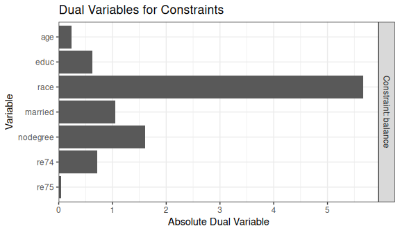
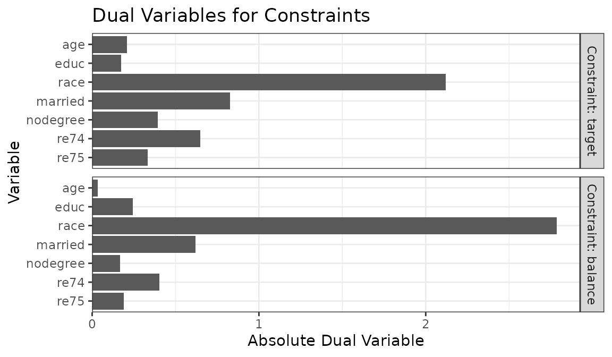
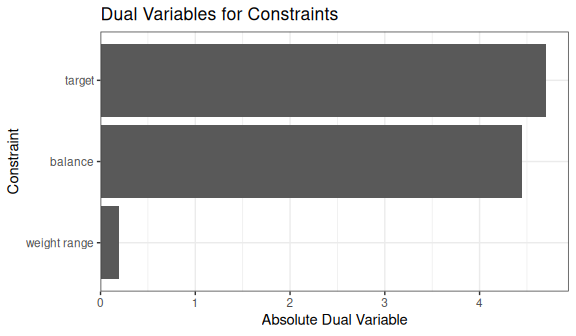
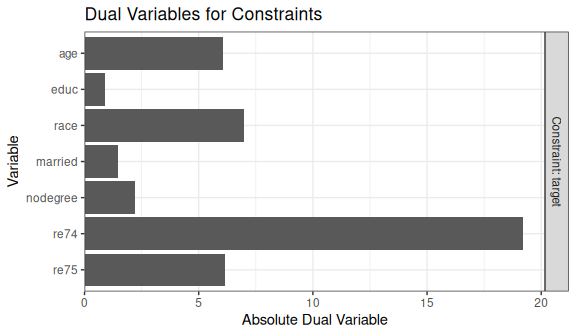

Using optweight to Estimate Stable Balancing Weights
Noah Greifer
2026-01-15
Source:vignettes/optweight.Rmd
optweight.RmdIntroduction
optweight implements stable balancing weighting (SBW) as described by Zubizarreta (2015) and Y. Wang and Zubizarreta (2020). This involves estimating weights aimed at adjusting for confounding by balancing covariates while minimizing some measure of variability of the weights. SBW is also known as empirical balancing calibration weighting (Chan, Yam, and Zhang 2016) and entropy balancing (Källberg and Waernbaum 2023). These methods are related to inverse probability weighting (IPW), and there are some equivalences between SBW and IPW (Y. Wang and Zubizarreta 2020). While IPW typically involves fitting a propensity score model for the probability of receiving treatment, SBW estimates weights directly that balance the covariates. The distinction between these two approaches is described in detail by Chattopadhyay, Hase, and Zubizarreta (2020).
SBW involves solving the following optimization problem:
\[\begin{array}{crcll} \min\limits_{\mathbf{w}} f\left(\mathbf{w}, \mathbf{b},\mathbf{s}\right) & & & & \\ \text{s.t.} & \left| \bar{x}^{sw}_{k,a} - \bar{x}^{sw}_{k, a'} \right| & \le & \delta_k & \forall \{a, a'\} \in \mathcal{A},\; \forall k \in \{1, \dots, K\} \\ & \left| \frac{1}{2} \left( \bar{x}^{sw}_{k,a} + \bar{x}^{sw}_{k, a'} \right) - \bar{x}_k^* \right| & \le & \varepsilon_k & \forall \{a, a'\} \in \mathcal{A},\; \forall k \in \{1, \dots, K\} \\ & w_i & \ge & w_\text{min} & \forall i \\ & \sum\limits_{i:A_i=a}s_i w_i & = & \sum\limits_{i:A_i=a}s_i b_i & \forall a \in \mathcal{A} \end{array}\]where
- \(\mathbf{w}=\{w_1, \dots, w_n\}\) are the estimated weights
- \(\mathbf{s}=\{s_1, \dots, s_n\}\) are sampling weights
- \(\mathbf{b}=\{b_1, \dots, b_n\}\) are “base” weights
- \(f(\mathbf{w}, \mathbf{b}, \mathbf{s})\) is the objective function to minimize—a function of the estimated weights, base weights, and sampling weights
- \(A_i\) is a categorical treatment for unit \(i\) taking on values \(a \in \mathcal{A}\)
- \(\bar{x}^{sw}_{k,a}\) is the weighted mean of covariate \(x_k\) in treatment group \(a\), weighted using the product of \(\mathbf{s}\) and \(\mathbf{w}\) (i.e., \(\bar{x}^{sw}_{k,a} = \frac{\sum_{i:A_i=a} s_i w_i x_{ki}}{\sum_{i:A_i=a} s_i w_i}\), where \(x_{ki}\) is the value of covariate \(\mathbf{x}_k\) for unit \(i\))
- \(\delta_k\) is the group balance tolerance for covariate \(k\)
- \(\varepsilon_k\) is the target balance tolerance for covariate \(k\)
- \(\bar{x}_k^*\) is the target value for covariate \(k\)
- \(w_\text{min}\) is the minimum weight allowed.
The interpretation of these constraints is as follows:
- Group Balance. The weighted covariate means are similar between groups (up to tolerance \(\delta_k\)).
- Target Balance. The midpoints between weighted covariate means in pairs of groups are similar to the target values (up to tolerance \(\varepsilon_k\)).
- Weight Range. All weights are larger than \(w_\text{min}\).
- Weight Scale. The weights sum to a fixed value in each group.
For a given dataset including treatment, covariates, sampling weights
(which may be all 1 if none are present), and base weights (which may be
all 1 if none are present), the user chooses \(\delta_k\), \(\bar{x}_k^*\), \(\varepsilon_k\), \(w_\text{min}\), and \(f\). Generally, \(f\) represents a measure of dispersion from
the base weights, weighted by the sampling weights; see the section on
norm below.
Asymptotic properties of SBW are described in Y. Wang and Zubizarreta (2020), though the formulation in optweight differs slightly from the original formulation in Y. Wang and Zubizarreta (2020) by allowing for an additional tuning parameter, \(\varepsilon_k\), to control target balance separately from group balance. In general, the weights are precise and perform well, and adding approximate balance constraints (i.e., using \(\delta_k>0\)) tends to improve precision without greatly affecting bias. There is also a weak double-robustness property to the weights: the estimate is consistent if either the outcome model corresponds to the balance constraints or the implicit propensity score model corresponds to the true propensity score model. Different forms of \(f\) imply different assumptions about the propensity score model. Allowing \(w_\text{min}\) to be negative allows for the possibility of negative weights, which can improve precision but induce extrapolation. It turns out that using a linear regression model for the outcome is equivalent to using SBW with the \(L_2\) norm, \(\delta_k=0\), and \(\varepsilon_k=0\), and \(w_\text{min}=-\infty\) (Chattopadhyay and Zubizarreta 2023).
Often \(\bar{x}_k^*\) are chosen to represent a known target group, like the full sample when targeting the ATE or the treated group when targeting the ATT. They can also be chosen to generalize the effect estimate to an arbitrary target population (Chattopadhyay, Cohn, and Zubizarreta 2024) or removed entirely to prioritize group balance over target balance (Barnard, Huling, and Wolfson 2025).
SBW can be generalized to continuous treatments, in which case instead of balancing the covariate means, the treatment-covariate covariances are constrained to be balanced. This was explored in Greifer (2020), Tübbicke (2022), and Vegetabile et al. (2021). SBW can also be used to directly weight a sample to resemble a population, without needing to balance two treatment groups. This also known known as matching-adjusted indirect comparison Signorovitch et al. (2010).
optweight contains functionality to perform these operations and assess their performance. It was designed to be user-friendly, compatible with the syntax used with WeightIt, and supported by cobalt for balance assessment, at the possible expense of some flexibility. The sbw package also implements some of these methods, prioritizing different aspects of the estimation. Entropy balancing is also implemented in WeightIt, which can also call optweight to provide a simpler interface to SBW.
Using optweight
The main function in optweight is optweight(),
which uses a formula interface to specify the treatment, covariates, and
balance tolerance. Other functions in optweight facilitate
specification of more detailed parameters and support diagnostics.
Below, we’ll use optweight() to estimate weights that
balance the covariates in an observational study. We’ll use the
lalonde dataset in cobalt and target the ATT
first. The treatment is treat, the outcome is
re78, and the other variables are the covariates to
balance.
## treat age educ race married nodegree re74 re75 re78
## 1 1 37 11 black 1 1 0 0 9930.0
## 2 1 22 9 hispan 0 1 0 0 3595.9
## 3 1 30 12 black 0 0 0 0 24909.5
## 4 1 27 11 black 0 1 0 0 7506.1
## 5 1 33 8 black 0 1 0 0 289.8
## 6 1 22 9 black 0 1 0 0 4056.5optweight() can be used simply by supplying the
treatment and covariates to the formula argument, the
dataset to the data argument, and the estimand to the
estimand argument (here, the ATT). By default,
optweight() minimizes the \(L_2\) norm, requires exact mean balance on
the covariates (i.e., \(\delta_k=0\)),
requires exact mean target balance on the covariates (i.e., \(\varepsilon_k=0\)), and requires all
weights to be greater than \(w_\text{min}=10^{-8}\).
ow <- optweight(treat ~ age + educ + race + married +
nodegree + re74 + re75,
data = lalonde,
estimand = "ATT")
ow## An optweight object
## - number of obs.: 614
## - norm minimized: "l2"
## - sampling weights: present
## - base weights: present
## - treatment: 2-category
## - estimand: ATT (focal: 1)
## - covariates: age, educ, race, married, nodegree, re74, re75Using cobalt::bal.tab() on the output computes the
weighted balance statistics; in particular, it produce weighted
(standardized) mean differences for all covariates as well as the
effective sample size (ESS), which represents the approximate size of an
unweighted sample that produces the same precision as the weighted
sample.
cobalt::bal.tab(ow)## Balance Measures
## Type Diff.Adj
## age Contin. -0
## educ Contin. -0
## race_black Binary -0
## race_hispan Binary 0
## race_white Binary 0
## married Binary -0
## nodegree Binary -0
## re74 Contin. -0
## re75 Contin. -0
##
## Effective sample sizes
## Control Treated
## Unadjusted 429. 185
## Adjusted 108.6 185As expected, all mean differences are exactly 0 in the weighted
sample. We can use summary() to examine some properties of
the weights:
summary(ow)## Summary of weights
## - Weight ranges:
##
## Min Max
## treated 1 || 1.
## control 0 |---------------------------| 6.002
##
## - Units with the 5 most extreme weights by group:
##
## 1 2 3 4 5
## treated 1 1 1 1 1
## 423 388 226 196 118
## control 5.568 5.602 5.67 5.922 6.002
##
##
## - Weight statistics:
##
## L2 L1 L∞ Rel Ent # Zeros
## treated 0. 0. 0. 0. 0
## control 1.717 1.339 5.002 1.23 0
##
## - Effective Sample Sizes:
##
## Control Treated
## Unweighted 429. 185
## Weighted 108.6 185summary() produces some information about the
distribution of weights, including different measures of the dispersion
of the weights, each of which corresponds to one of the allowed
objective functions to minimize. L2 is the square root of
the mean squared deviation of the estimated weights from the base
weights (i.e., the \(L_2\) divergence);
here, the base weights are all 1. See the help page for
summary.optweight() for more information about the other
statistics. Lastly, summary() produces the weighted and
original (effective) samples sizes.
We can use plot() on the summary() output
to visualize the distribution of the weights:

Because we targeted the ATT, only the weights for the control group are displayed (the treated group weights are all 1).
Below, we’ll adjust a few arguments to see what affects they have on the weights.
Balance tolerance: tols
The group balance tolerance is controlled by the tols
argument. This can either be a single value applied to all covariates or
a vector with a value for each covariate. By default,
tols = 0. Let’s see what happens when we increase
tols to .02.
ow2 <- optweight(treat ~ age + educ + race + married +
nodegree + re74 + re75,
data = lalonde,
estimand = "ATT",
tols = .02)
cobalt::bal.tab(ow2)## Balance Measures
## Type Diff.Adj
## age Contin. 0.02
## educ Contin. 0.02
## race_black Binary 0.02
## race_hispan Binary 0.00
## race_white Binary -0.02
## married Binary -0.02
## nodegree Binary 0.02
## re74 Contin. -0.02
## re75 Contin. 0.02
##
## Effective sample sizes
## Control Treated
## Unadjusted 429. 185
## Adjusted 118.8 185Now, all mean differences are less than .021.
Allowing for more relaxed imbalance also increases the ESS. The \(L_2\) statistic has shrunk correspondingly:
summary(ow2, weight.range = FALSE)## Summary of weights
##
## - Weight statistics:
##
## L2 L1 L∞ Rel Ent # Zeros
## treated 0. 0. 0. 0. 0
## control 1.616 1.267 4.212 1.118 0
##
## - Effective Sample Sizes:
##
## Control Treated
## Unweighted 429. 185
## Weighted 118.8 185To supply each covariate with its own balance tolerance, a named
vector must be supplied. This can sometimes be a little tedious, so
there is a helper function, process_tols(), that simplifies
this. Give process_tols() the formula and dataset (and,
optionally, an initial tolerance value or vector thereof), and it will
return a modifiable vector of balance tolerances that can be supplied to
optweight().
tols <- process_tols(treat ~ age + educ + race + married +
nodegree + re74 + re75,
data = lalonde,
tols = .02)
tols## - tols:
## age educ race married nodegree re74 re75
## 0.02 0.02 0.02 0.02 0.02 0.02 0.02Here, we’ll relax the constraint on race by setting its
group balance tolerance to .07 and then re-estimate the weights.
tols["race"] <- .07
tols## - tols:
## age educ race married nodegree re74 re75
## 0.02 0.02 0.07 0.02 0.02 0.02 0.02
ow3 <- optweight(treat ~ age + educ + race + married +
nodegree + re74 + re75,
data = lalonde,
estimand = "ATT",
tols = tols)
cobalt::bal.tab(ow3)## Balance Measures
## Type Diff.Adj
## age Contin. 0.02
## educ Contin. 0.02
## race_black Binary 0.07
## race_hispan Binary 0.00
## race_white Binary -0.07
## married Binary -0.02
## nodegree Binary 0.02
## re74 Contin. -0.02
## re75 Contin. 0.02
##
## Effective sample sizes
## Control Treated
## Unadjusted 429. 185
## Adjusted 132.7 185We can see that for all covariates other than race, the
mean differences are at or below .02, but for race, the
mean differences are at or below .07. This led to an increase in ESS due
to the relaxed constraints.
Objective function: norm
The norm argument controls which objective function is
used. See the table below for the allowable values of norm,
their names, and their formulas:
norm |
Name | \(f\left(\mathbf{w}, \mathbf{b},\mathbf{s}\right)\) |
|---|---|---|
"l2" |
\(L_2\) norm | \(\frac{1}{n}\sum_i{s_i(w_i-b_i)^2}\) |
"l1" |
\(L_1\) norm | \(\frac{1}{n} \sum_i {s_i \vert w_i - b_i \vert}\) |
"linf" |
\(L_\infty\) norm | \(\max_i {\vert w_i - b_i \vert}\) |
"entropy" |
Relative entropy | \(\frac{1}{n} \sum_i {s_i w_i \log \frac{w_i}{b_i}}\) |
"log" |
Sum of negative logs | \(\frac{1}{n} \sum_i {-s_i \log \frac{w_i}{b_i}}\) |
The \(L_2\) norm is the default. Of all the objective functions, the most thorough theoretical work has been done on the \(L_2\) norm and relative entropy, and these tend to be the easiest to optimize. Weighting by minimizing the relative entropy is also known as “entropy balancing” (Hainmueller 2012; Källberg and Waernbaum 2023; Zhao and Percival 2017) and is also available in WeightIt, which uses a more parsimonious representation of the problem. Weighting by minimizing the sum of negative logs is equivalent to nonparametric covariate balancing propensity score (npCBPS) weighting (Fong, Hazlett, and Imai 2018), which maximizes the empirical likelihood of the data to estimate the weights. A penalized version of npCBPS is available in CBPS and in WeightIt (which calls functions from CBPS), but optweight offers additional options not possible in those packages, such as specifying balance tolerances, targets, and different estimands.
Different solvers are available for each norm; see the
optweight() help page for details.
Below, we’ll minimize the \(L_2\) norm, \(L_1\) norm, \(L_\infty\) norm, and relative entropy and see how those choices affect the properties of the weights.
# L2 norm
ow_l2 <- optweight(treat ~ age + educ + race + married +
nodegree + re74 + re75,
data = lalonde,
estimand = "ATT",
norm = "l2")
# L1 norm
ow_l1 <- optweight(treat ~ age + educ + race + married +
nodegree + re74 + re75,
data = lalonde,
estimand = "ATT",
norm = "l1")
# L-infinity norm
ow_linf <- optweight(treat ~ age + educ + race + married +
nodegree + re74 + re75,
data = lalonde,
estimand = "ATT",
norm = "linf",
eps = 1e-5) # to improve convergence
# Relative entropy
ow_re <- optweight(treat ~ age + educ + race + married +
nodegree + re74 + re75,
data = lalonde,
estimand = "ATT",
norm = "entropy")Below is a table of the statistics (rows) for the control group for each norm minimized (columns).
| l2 | l1 | linf | RE | |
|---|---|---|---|---|
| L2 | 1.717 | 2.017 | 1.877 | 1.832 |
| L1 | 1.339 | 1.281 | 1.548 | 1.287 |
| L∞ | 5.002 | 9.924 | 3.577 | 8.421 |
| Rel Ent | 1.230 | 1.227 | 1.500 | 1.101 |
We can see that minimizing the \(L_2\) norm yields weights that have the lowest \(L_2\) divergence, minimizing the \(L_1\) norm yields weights that have the lowest \(L_1\) divergence, minimizing the \(L_\infty\) norm yields weights that have the lowest \(L_\infty\) divergence, and minimizing the relative entropy yields weights that have the lowest relative entropy. The \(L_2\) divergence has the closest correspondence to the ESS (they have a 1:1 relationship), but there are some theoretical reasons to prefer other norms, especially when they correspond to certain assumptions about the true propensity score model. See Källberg and Waernbaum (2023) for more information on these assumptions.
Representativeness: estimand, targets, and
target.tols
Representativeness is an important but occasionally neglected aspect
of weighting. The degree to which a given weighted sample can be
representative of a specific target population can be controlled by the
estimand, target, and target.tols
arguments, which we detail below.
estimand
Different estimands can be targeted by supplying an argument to
estimand. Allowable estimands include the ATE, ATT, and
ATC. These ensure the covariate means in each group resemble those in
the full sample, the treated group, and the control group, respectively.
For example, setting estimand = "ATE" requests that both
groups be weighted so that the covariate means are equal to the
covariate means in the full sample, as demonstrated below.
The covariate means in the full sample can be computed using
cobalt::col_w_mean():
covs <- lalonde[-c(1, 9)]
cobalt::col_w_mean(covs)## age educ race_black race_hispan race_white married
## 27.3632 10.2687 0.3958 0.1173 0.4870 0.4153
## nodegree re74 re75
## 0.6303 4557.5466 2184.9382After estimating weights that target the ATE, we will see that the weighted covariate means in each group are equal to those in the full sample:
ow_ate <- optweight(treat ~ age + educ + race + married +
nodegree + re74 + re75,
data = lalonde,
estimand = "ATE")
cobalt::bal.tab(ow_ate, disp = "m")## Balance Measures
## Type M.0.Adj M.1.Adj Diff.Adj
## age Contin. 27.363 27.363 0
## educ Contin. 10.269 10.269 0
## race_black Binary 0.396 0.396 0
## race_hispan Binary 0.117 0.117 0
## race_white Binary 0.487 0.487 -0
## married Binary 0.415 0.415 0
## nodegree Binary 0.630 0.630 0
## re74 Contin. 4557.547 4557.547 0
## re75 Contin. 2184.938 2184.938 0
##
## Effective sample sizes
## Control Treated
## Unadjusted 429. 185.
## Adjusted 343.5 50.72
targets
In addition to targeting a natural sample, it’s also possible to
target a specific population characterized by covariate means \(\bar{x}_k^*\) by supplying an argument to
targets2. The theory behind this methodology is
described by Chattopadhyay, Cohn, and Zubizarreta
(2024).
To request a different target population, process_targets()
can be used to create a vector of target means, which are supplied to
the targets argument of optweight().
targets1 <- process_targets(~ age + educ + race + married +
nodegree + re74 + re75,
data = lalonde)
targets1## - targets:
## age educ race_black race_hispan race_white married
## 27.3632 10.2687 0.3958 0.1173 0.4870 0.4153
## nodegree re74 re75
## 0.6303 4557.5466 2184.9382By default, process_targets() computes the mean of each
covariate in the full sample. These can be modified similarly to
tols to specify target means. Note that for categorical
covariates, the proportions in the groups must sum to 1.
targets1["age"] <- 35
targets1[c("race_black", "race_hispan", "race_white")] <- c(.5, .3, .2)
targets1## - targets:
## age educ race_black race_hispan race_white married
## 35.0000 10.2687 0.5000 0.3000 0.2000 0.4153
## nodegree re74 re75
## 0.6303 4557.5466 2184.9382We can supply these to optweight() to request that the
covariate means in the weighted sample are equal to these target means.
We need to set estimand = NULL to ensure the
targets are obeyed. Failing to do this will produce a
warning.
ow_target1 <- optweight(treat ~ age + educ + race + married +
nodegree + re74 + re75,
data = lalonde,
targets = targets1,
estimand = NULL)
cobalt::bal.tab(ow_target1, disp = "m")## Balance Measures
## Type M.0.Adj M.1.Adj Diff.Adj
## age Contin. 35.000 35.000 -0
## educ Contin. 10.269 10.269 -0
## race_black Binary 0.500 0.500 -0
## race_hispan Binary 0.300 0.300 0
## race_white Binary 0.200 0.200 0
## married Binary 0.415 0.415 -0
## nodegree Binary 0.630 0.630 -0
## re74 Contin. 4557.547 4557.547 -0
## re75 Contin. 2184.938 2184.938 -0
##
## Effective sample sizes
## Control Treated
## Unadjusted 429. 185.
## Adjusted 133.5 25.6The treatment effect estimate from this method of weighting would have the interpretation of the estimate from a population with similar means to those of the sample but with a mean age of 35 years (older than the original sample) and a racial profile of 50% Black, 30% Hispanic, and 20% white.
It may be that representativeness to a specific target population is
only desired for a subset of variables, e.g., those expected to be
effect modifiers. We can remove constraints on target balance entirely
for certain variable by setting their target values to NA.
This can be especially helpful in cases of low overlap, as described by
Barnard, Huling, and Wolfson (2025). We
do this below, setting the targets for the race categories
to NA:
targets2 <- process_targets(~ age + educ + race + married +
nodegree + re74 + re75,
data = lalonde)
# Set race targets to NA
is.na(targets2[startsWith(names(targets2), "race_")]) <- TRUE
ow_target2 <- optweight(treat ~ age + educ + race + married +
nodegree + re74 + re75,
data = lalonde,
targets = targets2,
estimand = NULL)
cobalt::bal.tab(ow_target2, disp = "m")## Balance Measures
## Type M.0.Adj M.1.Adj Diff.Adj
## age Contin. 27.363 27.363 0
## educ Contin. 10.269 10.269 0
## race_black Binary 0.451 0.451 0
## race_hispan Binary 0.164 0.164 -0
## race_white Binary 0.386 0.386 -0
## married Binary 0.415 0.415 0
## nodegree Binary 0.630 0.630 0
## re74 Contin. 4557.547 4557.547 0
## re75 Contin. 2184.938 2184.938 0
##
## Effective sample sizes
## Control Treated
## Unadjusted 429. 185.
## Adjusted 299.5 63.03The resulting weights still ensure between-group balance (up to the
supplied tols), but the resulting weighted means for the
untargeted variables are those that happened to optimize the norm of the
weights. We can even relax all target constraints to solely prioritize
between-group balance by setting targets = NA.
ow_target3 <- optweight(treat ~ age + educ + race + married +
nodegree + re74 + re75,
data = lalonde,
targets = NA,
estimand = NULL)
cobalt::bal.tab(ow_target3, disp = "m")## Balance Measures
## Type M.0.Adj M.1.Adj Diff.Adj
## age Contin. 25.877 25.877 -0
## educ Contin. 10.318 10.318 0
## race_black Binary 0.454 0.454 -0
## race_hispan Binary 0.166 0.166 0
## race_white Binary 0.380 0.380 0
## married Binary 0.319 0.319 -0
## nodegree Binary 0.626 0.626 -0
## re74 Contin. 3316.369 3316.369 0
## re75 Contin. 1994.888 1994.888 0
##
## Effective sample sizes
## Control Treated
## Unadjusted 429. 185.
## Adjusted 283.1 76.99This yields a kind of “overlap” weights that target whichever population optimizes the objective function of the weights subject to between-group balance alone (Kallus and Santacatterina 2019).
target.tols
Between eschewing target balance altogether and requiring exact
target balance is allowing for inexact target balance by using
target.tols, which is specified like to tols
argument. target.tols controls \(\varepsilon_k\), i.e., how far the midpoint
between group means can vary from the specified target mean. As with
tols, this can be applied to a subset of covariates or to
all of them simultaneously.
Previously, we used optweight() to target a specific
target population defined by targets1; the resulting
weights are stored in ow_target1. We can increase the ESS
by relaxing the target balance constraint on race. To do
this, we create a new vector of target balance tolerances using
process_tols() and modify the value for
race.
target.tols1 <- process_tols(treat ~ age + educ + race + married +
nodegree + re74 + re75,
data = lalonde)
target.tols1["race"] <- .07
target.tols1## - tols:
## age educ race married nodegree re74 re75
## 0.00 0.00 0.07 0.00 0.00 0.00 0.00We can supply this vector of target balance tolerances to the
target.tols argument of optweight() to relax
the target balance constraint without eliminating it entirely.
ow_target1b <- optweight(treat ~ age + educ + race + married +
nodegree + re74 + re75,
data = lalonde,
targets = targets1,
target.tols = target.tols1,
estimand = NULL)
cobalt::bal.tab(ow_target1b, disp = "m")## Balance Measures
## Type M.0.Adj M.1.Adj Diff.Adj
## age Contin. 35.000 35.000 -0
## educ Contin. 10.269 10.269 -0
## race_black Binary 0.522 0.522 -0
## race_hispan Binary 0.230 0.230 0
## race_white Binary 0.248 0.248 0
## married Binary 0.415 0.415 -0
## nodegree Binary 0.630 0.630 -0
## re74 Contin. 4557.547 4557.547 -0
## re75 Contin. 2184.938 2184.938 -0
##
## Effective sample sizes
## Control Treated
## Unadjusted 429. 185.
## Adjusted 148.4 31.26Here we can see that the ESS has increased due to relaxing the
constraint on target balance, but the means for each race
category are still close to (i.e., within 0.07 of) their specified
target values.
If we wanted to remove a covariate’s target balance constraint
entirely, we could set its target value to NA, as we did
previously, or we can set its target balance tolerance to
Inf, which we do below for age:
target.tols1["age"] <- Inf
target.tols1## - tols:
## age educ race married nodegree re74 re75
## Inf 0.00 0.07 0.00 0.00 0.00 0.00
ow_target1c <- optweight(treat ~ age + educ + race + married +
nodegree + re74 + re75,
data = lalonde,
targets = targets1,
target.tols = target.tols1,
estimand = NULL)
cobalt::bal.tab(ow_target1c, disp = "m")## Balance Measures
## Type M.0.Adj M.1.Adj Diff.Adj
## age Contin. 26.495 26.495 0
## educ Contin. 10.269 10.269 -0
## race_black Binary 0.500 0.500 0
## race_hispan Binary 0.230 0.230 -0
## race_white Binary 0.270 0.270 -0
## married Binary 0.415 0.415 0
## nodegree Binary 0.630 0.630 0
## re74 Contin. 4557.547 4557.547 0
## re75 Contin. 2184.938 2184.938 0
##
## Effective sample sizes
## Control Treated
## Unadjusted 429. 185.
## Adjusted 246.7 71.72In general, it makes sense to maintain strict target balance constraints on all covariates, relaxing them only when the covariate is not suspected to be an effect modifier (i.e., so representativeness on that covariate is not important) or when substantial precision gains can be made by doing so. The section on Dual Variables below describes how to determine whether the latter scenario may be in effect.
Sampling weights and base weights
Sampling weights and base weights are different forms of initially computed weights that can be used to modify the optimization problem. They are used for two different purposes, which we describe below.
Sampling weights: s.weights
Sampling weights are used when attempting to generalize the estimates
from a sample to a specific target population characterized by the
sampling weights. Some datasets come with sampling weights in order for
analyses using them to be valid. These weights can be supplied to the
s.weights argument of optweight(). This has
three effects:
- The balance and target constraints correspond to the product of the estimated and sampling weights
- The target values for the covariates are weighted by the sampling
weights (if not supplied through
targets) - The contribution of the estimated weights to the objective function is weighted by the sampling weights
Sampling weights are also used when bootstrapping using the
fractional weighted bootstrap (Xu et al.
2020), e.g., as implemented in the fwb package; see
section Estimating Effects below. By default,
when s.weights is not specified, sampling weights are equal
to 1.
Base weights: b.weights
Base weights are a set of initial weights that have some properties
that the user wants to retain while enforcing balance constraints. The
estimated weights are chosen to minimize their distance from the base
weights, where that distance corresponds to \(f\). These weights can be supplied to the
b.weights argument of optweight(). By default,
when not specified, base weights are equal to 1. An example use of base
weights would be to enforce balance on a set of IPW weights estimated
using a flexible model that is unable to exactly balance the covariates.
This strategy was used by one of the winning methods in the 2016 ACIC
data competition (Dorie et al.
2019). We’ll demonstrate this use of base weights below.
First, we’ll estimate propensity score weights using generalized boosted modeling through WeightIt. This is a flexible machine learning model, and we can request that features beyond the covariate means be balanced by minimizing the largest Kolmogorov-Smirnov (KS) statistic in the weighted sample.
# GBM IPW weights
W_gbm <- WeightIt::weightit(treat ~ age + educ + race + married +
nodegree + re74 + re75,
data = lalonde,
estimand = "ATT",
method = "gbm",
criterion = "ks.max")Next we’ll use optweight() to estimate a set of weights
that differ as little as possible from these estimated weights while
enforcing exact balance on the covariate means.
# SBW with GBM base weights
ow_bw <- optweight(treat ~ age + educ + race + married +
nodegree + re74 + re75,
data = lalonde,
estimand = "ATT",
b.weights = W_gbm$weights)We’ll also estimate SBW weights with uniform base weights to see the difference in the properties of the weights.
# SBW without base weights
ow <- optweight(treat ~ age + educ + race + married +
nodegree + re74 + re75,
data = lalonde,
estimand = "ATT")Finally, we can look at balance on all three sets of weights on the means and KS statistics.
# Mean diferences
cobalt::bal.tab(W_gbm, stats = "m",
weights = list(ow_bw = ow_bw$weights,
ow = ow$weights))## Balance Measures
## Type Diff.weightit Diff.ow_bw Diff.ow
## prop.score Distance 0.577 0.571 1.782
## age Contin. 0.053 0.000 -0.000
## educ Contin. -0.080 -0.000 -0.000
## race_black Binary 0.017 0.000 -0.000
## race_hispan Binary 0.002 -0.000 0.000
## race_white Binary -0.018 -0.000 0.000
## married Binary 0.005 0.000 -0.000
## nodegree Binary 0.062 0.000 -0.000
## re74 Contin. 0.111 0.000 -0.000
## re75 Contin. 0.126 0.000 -0.000
##
## Effective sample sizes
## Control Treated
## All 429. 185
## weightit 24.71 185
## ow_bw 24.54 185
## ow 108.64 185
# KS statistics
cobalt::bal.tab(W_gbm, stats = "ks",
weights = list(ow_bw = ow_bw$weights,
ow = ow$weights))## Balance Measures
## Type KS.weightit KS.ow_bw KS.ow
## prop.score Distance 0.223 0.222 0.615
## age Contin. 0.096 0.102 0.283
## educ Contin. 0.069 0.057 0.042
## race_black Binary 0.017 0.000 0.000
## race_hispan Binary 0.002 0.000 0.000
## race_white Binary 0.018 0.000 0.000
## married Binary 0.005 0.000 0.000
## nodegree Binary 0.062 0.000 0.000
## re74 Contin. 0.062 0.037 0.226
## re75 Contin. 0.096 0.056 0.140
##
## Effective sample sizes
## Control Treated
## All 429. 185
## weightit 24.71 185
## ow_bw 24.54 185
## ow 108.64 185Looking at the mean differences (in the columns
Diff.weightit, Diff.ow_bw, and
Diff.ow in the first table), we can see that the GBM
weights from WeightIt alone did not balance the covariate
means, whereas both set of SBW weights from optweight did.
However, in the second table, we can see big differences in the KS
statistics between the SBW weights that incorporated the base weights
and those that didn’t. The KS statistics for the SBW weights that
incorporated the base weights (listed in the KS.ow_bw
column) are very close to those for the GBM weights (listed in the
KS.weightit column) because the estimated weights are very
close to the GBM weights. In contrast, the SBW weights that didn’t
incorporate the base weights have very high KS statistics for some
covariates (listed in the KS.ow column); they are unable to
take advantage of the distribution-balancing properties of the original
GBM weights.
In this way, incorporating the base weights provides a middle ground between the GBM weights and the basic SBW weights: they ensure exact balance on the means while attempting to retain as much similarity to the GBM weights as possible, thereby inheriting some of their balancing properties. Unfortunately, one of those properties is also a very low ESS, though in this case, little ESS is lost by enforcing the additional balance constraints. Using different norms with base weights can also be more effective than using with them uniform base weights, as different norms prioritize similarity to the base weights in ways that may retain different properties3.
Dual variables
Dual variables, also known as “shadow prices”, are part of the output of the optimization problem that represent how “active” a given constraint is at the optimum (Zubizarreta 2015). A large dual variable means that relaxing the constraint will allow the objective function to reach a lower value. They are related to the coefficients on covariates in a propensity score model, representing how much each covariate is contributing to the estimation of the weights.
Zubizarreta (2015) describes
the utility of dual variables after SBW: they can be used to determine
which covariates have constraints that can be relaxed to improve
precision and which covariates have constraints that can be tightened
without affecting precision. The dual variables are available in
optweight() output in the duals component, but
they can also be plotted using plot(). They can also be
useful for diagnosing convergence failure; often, a constraint that is
impossible to meet will have a high dual variable when no solution can
be found.
Below, we’ll demonstrate how we can use the dual variables to see how to modify constraints to try to take advantage of the bias-variance trade-off. First we’ll estimate SBW weights with balance tolerances of .02 for all covariates.
tols <- process_tols(treat ~ age + educ + race + married +
nodegree + re74 + re75,
data = lalonde,
tols = .02)
ow <- optweight(treat ~ age + educ + race + married +
nodegree + re74 + re75,
data = lalonde,
estimand = "ATT",
tols = tols)
summary(ow, weight.range = FALSE)## Summary of weights
##
## - Weight statistics:
##
## L2 L1 L∞ Rel Ent # Zeros
## treated 0. 0. 0. 0. 0
## control 1.616 1.267 4.212 1.118 0
##
## - Effective Sample Sizes:
##
## Control Treated
## Unweighted 429. 185
## Weighted 118.8 185We can print the dual variables in the duals component
of the output object and plot them with plot():
ow$duals## component constraint cov dual
## 1 0 weight range <NA> 2.46151
## 2 1 balance age 0.24485
## 3 1 balance educ 0.62674
## 4 1 balance race 5.66548
## 5 1 balance married 1.05266
## 6 1 balance nodegree 1.61135
## 7 1 balance re74 0.71501
## 8 1 balance re75 0.04373
plot(ow)
From this, it’s clear that race has the largest dual
variable, and re75 has the smallest. That means we can
likely get the biggest gains in ESS by relaxing the balance constraint
for race, whereas tightening the balance constraint for
re75 will have little effect on the ESS. Below, we relax
the balance constraint for race to .1.
tols["race"] <- .1
ow2 <- optweight(treat ~ age + educ + race + married +
nodegree + re74 + re75,
data = lalonde,
estimand = "ATT",
tols = tols)
summary(ow2, weight.range = FALSE)## Summary of weights
##
## - Weight statistics:
##
## L2 L1 L∞ Rel Ent # Zeros
## treated 0. 0. 0. 0. 0
## control 1.424 1.113 3.638 0.91 0
##
## - Effective Sample Sizes:
##
## Control Treated
## Unweighted 429. 185
## Weighted 141.7 185By relaxing the constraint on race, our ESS increased by
quite a bit. We would not see the same increase had we instead relaxed
the constraint on a covariate with a smaller dual variable, like
re75. Below, we restore all balance constraints to .02 and
then set the balance constraint for re75 to .1.
tols[] <- .02
tols["re75"] <- .1
ow3 <- optweight(treat ~ age + educ + race + married +
nodegree + re74 + re75,
data = lalonde,
estimand = "ATT",
tols = tols)
summary(ow3, weight.range = FALSE)## Summary of weights
##
## - Weight statistics:
##
## L2 L1 L∞ Rel Ent # Zeros
## treated 0. 0. 0. 0. 0
## control 1.616 1.267 4.207 1.118 0
##
## - Effective Sample Sizes:
##
## Control Treated
## Unweighted 429. 185
## Weighted 118.8 185This had virtually no effect on the ESS (relative to all balance
tolerances being equal to .02). However, this also suggests we can
tighten the constraint on re75 without much loss in ESS.
Below, we decrease the tolerance on re75 to 0:
tols["re75"] <- 0
ow4 <- optweight(treat ~ age + educ + race + married +
nodegree + re74 + re75,
data = lalonde,
estimand = "ATT",
tols = tols)
summary(ow4, weight.range = FALSE)## Summary of weights
##
## - Weight statistics:
##
## L2 L1 L∞ Rel Ent # Zeros
## treated 0. 0. 0. 0. 0
## control 1.617 1.269 4.229 1.12 0
##
## - Effective Sample Sizes:
##
## Control Treated
## Unweighted 429. 185
## Weighted 118.7 185We see that despite the tighter tolerance, the ESS remains about the same. For reference, below are the balance statistics and ESSs for all four sets of weights:
cobalt::bal.tab(treat ~ age + educ + race + married +
nodegree + re74 + re75,
data = lalonde,
weights = list(ow = ow$weights,
ow2 = ow2$weights,
ow3 = ow3$weights,
ow4 = ow4$weights))## Balance Measures
## Type Diff.ow Diff.ow2 Diff.ow3 Diff.ow4
## age Contin. 0.02 0.02 0.020 0.02
## educ Contin. 0.02 0.02 0.020 0.02
## race_black Binary 0.02 0.10 0.020 0.02
## race_hispan Binary 0.00 0.00 0.000 0.00
## race_white Binary -0.02 -0.10 -0.020 -0.02
## married Binary -0.02 -0.02 -0.020 -0.02
## nodegree Binary 0.02 0.02 0.020 0.02
## re74 Contin. -0.02 -0.02 -0.020 -0.02
## re75 Contin. 0.02 0.02 0.026 -0.00
##
## Effective sample sizes
## Control Treated
## All 429. 185
## ow 118.8 185
## ow2 141.7 185
## ow3 118.8 185
## ow4 118.7 185Again we can see that relaxing the balance constraint for
race increases the ESS significantly, whereas either
tightening or relaxing the constraint for re75 has little
effect on the ESS.
Group balance constraints are not the only constraints that can be relaxed; when an estimand other than the ATT is targeted, we also have target balance constraints, and the constraint on the minimum of the weights may be active as well (i.e., indicating that requiring the weights to be positive limits the precision of the resulting weights). Below, we demonstrate how these might differ by targeting the ATE:
ow <- optweight(treat ~ age + educ + race + married +
nodegree + re74 + re75,
data = lalonde,
estimand = "ATE")Plotting the dual variables reveals separate dual variables for the target and balance constraints:
plot(ow)
The group and target balance constraints can be modified
independently of each other using tols and
target.tols, respectively. In this case, if we believed
race was a strong confounder but a weak effect modifier, we
may be more willing to relax its target balance constraints over its
group balance constraint.
We can also plot the sum of the dual variables for each type of
constraint to examine which set is most active by setting
type = "constraints" in plot():
plot(ow, type = "constraints")
From this we can see that group balance and target constraints have
similar limiting effects on the optimization, whereas the weight range
(controlled by min_w) has little effect in this
example.
Multivariate treatments
It is possible to supply balance constraints for multiple (i.e.,
multivariate) treatments simultaneously to estimate a single set of
weights that satisfies them all. This approach is described by Chen and Zhou (2023) in the
context of multiple continuous treatments. optweightMV()
provides an interface to balancing multiple treatments and works
similarly to optweight(), though with the ability to supply
multiple balancing formulas. Though this can be used with conceptually
distinct treatments, it can also sometimes be useful to use it with
multiple transformations of a single treatment; for example, Greifer (2020) found
that in order to eliminate the bias due to certain kinds of imbalance
with a continuous treatment, the square of the centered treatment must
be uncorrelated with the covariates, in addition to the treatment itself
being uncorrelated with the covariates.
To use optweightMV(), supply a list of balancing
formulas to the formula.list argument. The
tols.list argument must also be a list with a vector of
tolerances for each treatment, each with a value for each covariate.
However, targets should be a vector with a value for each
unique covariate since one cannot specify multiple targets for the same
covariate. Below is example (not run) of how to specify a call to
optweightMV():
owmv <- optweightMV(list(t1 ~ x1 + x2 + x3,
t2 ~ x1 + x2 + x3,
t3 ~ x1 + x2 + x3),
data = data,
tols.list = list(c(x1 = .01, x2 = .01, x3 = .01),
c(x1 = .02, x2 = .02, x3 = .02),
c(x1 = .03, x2 = .03, x3 = .03)),
targets = c(x1 = 10, x2 = .34, x3 = 5.5))The syntax can be abbreviated by supplying a single value in each
element of tols.list that is applied to all covariates,
e.g., tols.list = list(.01, .02, .03); or, if the same
vector of balance tolerance is desired for all covariates for all
treatments, a list with a single vector, e.g.,
tols.list = list(c(x1 = .01, x2 = .01, x3 = .01)); or, if
the same tolerance is desired for all covariates and all treatments, a
list with a single value, e.g., tols.list = list(.02).
targets can be omitted to target the ATE (i.e., to balance
the covariates at their means in the sample), but no other estimands can
be specified.
One might be tempted to use optweightMV() to estimate
balancing weights for longitudinal treatments. While this is possible,
it’s not as simple as supplying a balancing formula for each treatment
balancing the treatment and covariate history to that treatment (Yiu
and Su 2020). Zhou and Wodtke (2020) describe
how to specify balance constraints for entropy balancing with
longitudinal treatments, and they involve balancing not the covariate
directly but rather the residuals in regressions of the covariates on
treatment and covariate histories. Functionality for this specific
method is not present in optweight, but is available in the rbw package.
It may be possible to implement this in optweight manually, but
I cannot advise on how to do so.
optweight.svy()
When the goal is not to balance treatment groups to each other or to
some target population but rather to balance one sample to a target
distribution, one can use optweight.svy() instead of
optweight(). The .svy suffix is an indication
that can be used as a method to generate survey weights so that the
sample generalizes to a population of interest with specific means.
optweight.svy() works just like optweight()
except that no treatment variable is specified and targets
should be specified.
This is useful in the context of matching-adjusted indirect
comparison (MAIC, Signorovitch
et al. 2010), which involves weighting a given trial sample
to resemble the covariate distribution of some other trial’s sample.
MAIC as originally described is equivalent to entropy balancing (Phillippo et al.
2020), which can be requested by setting
norm = "entropy".
Below, we demonstrate weighting the control subset of
lalonde to resemble a specific target population. As with
optweightit(), it can be helpful to use
process_targets() to simplify specification of the
covariates means. If all variables in the dataset are to be specified,
the formula can be omitted (for both process_targets() and
optweight.svy()).
lalonde_c <- subset(lalonde, treat == 0,
select = -c(treat))
targets <- process_targets(lalonde_c)
targets## - targets:
## age educ race_black race_hispan race_white married
## 28.0303 10.2354 0.2028 0.1422 0.6550 0.5128
## nodegree re74 re75 re78
## 0.5967 5619.2365 2466.4844 6984.1697To request individual means, the targets can be set to those values.
To allow a covariate mean to vary freely, one can either omit it from
the calls to process_targets() and
optweight.svy() or set the target value to NA.
We’ll do that for re78, and set specific targets for the
other variables except re75, which we’ll leave at its
mean.
targets["age"] <- 40
targets["educ"] <- 9
targets[c("race_black", "race_hispan", "race_white")] <- c(.2, .2, .6)
targets["married"] <- .6
targets["nodegree"] <- .6
targets["re74"] <- 1000
is.na(targets["re78"]) <- TRUE
targets## - targets:
## age educ race_black race_hispan race_white married
## 40.0 9.0 0.2 0.2 0.6 0.6
## nodegree re74 re75 re78
## 0.6 1000.0 2466.5 NAWe can supply these to optweight.svy(). This time we’ll
set min.w to 0 to allow those with weights of 0 to be
effectively dropped from the sample.
ow_s <- optweight.svy(lalonde_c,
targets = targets,
min.w = 0)
ow_s## An optweight.svy object
## - number of obs.: 429
## - norm minimized: "l2"
## - sampling weights: present
## - base weights: present
## - covariates: age, educ, race, married, nodegree, re74, re75, re78
summary(ow_s)## Summary of weights
## - Weight ranges:
##
## Min Max
## all 0 |---------------------------| 13.54
##
## - Units with the 5 most extreme weights:
##
## 404 152 111 19 16
## all 9.488 9.669 11.326 11.429 13.537
##
##
## - Weight statistics:
##
## L2 L1 L∞ # Zeros
## all 2.237 1.5 12.54 307
##
## - Effective Sample Sizes:
##
## Total
## Unweighted 429.
## Weighted 71.44We can see that the weights required to move the sample toward our
specified target decrease the ESS by quite a bit, and several units were
given weights of 0. This can actually be a good thing if it means less
data needs to be collected since those with weights of 0 are not
necessary for subsequent analysis. We can examine the weighted covariate
means using cobalt::col_w_means() as before, with the
estimated weights supplied to s.weights:
cobalt::col_w_mean(lalonde_c, s.weights = ow_s$weights)## age educ race_black race_hispan race_white married
## 40.0 9.0 0.2 0.2 0.6 0.6
## nodegree re74 re75 re78
## 0.6 1000.0 2466.5 4725.6We can see that the weighted mean of re78 is whatever
minimized the \(L_2\) norm of the
weights since no constraint was placed on it. As with
optweight(), we can see how much each constraint
contributed to the increase in variability by examining the dual
variables:
plot(ow_s)
Here it’s clear that the constraint on re74 is
contributing the most, and that relaxing the constraint would have the
greatest impact on ESS. The constraint can be relaxed either by changing
the target to one closer to that of the original data (or closer to
where it would be if no constraint was placed on re74) or
by setting a more relaxed tolerance for re74 using
tols. We’ll use the latter option below:
tols <- process_tols(lalonde_c, tols = 0)
tols["re74"] <- 300
tols## - tols:
## age educ race married nodegree re74 re75 re78
## 0 0 0 0 0 300 0 0Here we set the tolerance for re74 to be 300. We need to
set std.cont = FALSE to tell optweight.svy()
that the tolerance for continuous variables should be in raw units, not
standardized units. Now we can interpret our constraint as allowing the
weighted mean for re74 to be within 300 of its specified
target of 1000.
ow_s2 <- optweight.svy(lalonde_c,
targets = targets,
min.w = 0,
tols = tols,
std.cont = FALSE)
summary(ow_s2, weight.range = FALSE)## Summary of weights
##
## - Weight statistics:
##
## L2 L1 L∞ # Zeros
## all 2.07 1.44 10.68 290
##
## - Effective Sample Sizes:
##
## Total
## Unweighted 429.
## Weighted 81.15This increased the ESS of the weights, and below we can see that the
weighted mean for re74 is at most 300 away from 1000, while
the other variables are at their specified targets.
cobalt::col_w_mean(lalonde_c, s.weights = ow_s2$weights)## age educ race_black race_hispan race_white married
## 40.0 9.0 0.2 0.2 0.6 0.6
## nodegree re74 re75 re78
## 0.6 1300.0 2466.5 4710.8Estimating effects
Because SBW weights function just like IPW weights, the same
procedures can be used to estimate the effect of treatment in an
SBW-weighted sample. One only needs to run a regression of the outcome
on the treatment with the weights incorporated. It is critical that the
usual standard errors from lm() or glm(),
etc., are not used; special standard errors are required after
weighting. See
vignette("estimating-effects", package = "WeightIt") for
more details on estimating effects after weighting. WeightIt
provides tools for facilitating this when weights are estimated using
WeightIt::weightit(), which provides an interface to
optweight(), though with slightly fewer options
available.
Often, the best way to account for uncertainty in estimating a treatment effect after SBW is by bootstrapping. This ensures variability due to estimating the weights is correctly incorporated. The fractional weighted bootstrap (Xu et al. 2020) is often particularly effective because no units are dropped from the sample in each bootstrap replication. When bootstrapping cannot be used (e.g., because it is too computationally demanding or the specified constraints cannot be expected to be satisfied in all bootstrap samples), using a robust standard error can be an acceptable alternative.
Below, we demonstrate both approaches with the lalonde
data. First, we estimate the weights for the ATT and fit the outcome
model.
ow <- optweight(treat ~ age + educ + race + married +
nodegree + re74 + re75,
data = lalonde,
estimand = "ATT",
eps = 1e-5)
fit <- lm(re78 ~ treat, data = lalonde,
weights = ow$weights)
coef(fit)## (Intercept) treat
## 5145 1204Again, we must not use the usual standard errors produced by running
summary() on the lm() output; we must use
either bootstrapping or a robust standard error. First, we’ll use
bootstrapping with fwb, which
implements the fractional weighted bootstrap. This involves drawing a
set of weights from a distribution and performing the entire analysis
with these weights incorporated. These weights should be supplied to the
s.weights argument in optweight() and
multiplied by the returned weights before being used in
lm()4. We can use update() to
re-estimate the SBW weights and weighted regression model in each
bootstrap replication.
library(fwb)
bootfun <- function(data, w) {
ow_boot <- update(ow, s.weights = w)
fit_boot <- update(fit, weights = ow_boot$weights * w)
coef(fit_boot)
}
set.seed(123)
boot <- fwb(lalonde, bootfun,
R = 500, # more is always better, but slower
verbose = FALSE)
summary(boot, ci.type = "wald", p.value = TRUE)## Estimate Std. Error CI 2.5 % CI 97.5 % z value Pr(>|z|)
## (Intercept) 5145 571 4026 6263 9.02 <2e-16 ***
## treat 1204 754 -274 2682 1.60 0.11
## ---
## Signif. codes: 0 '***' 0.001 '**' 0.01 '*' 0.05 '.' 0.1 ' ' 1To use a robust standard error, it’s easiest to use functions in the
marginaleffects
package. Supply the output of lm() to
marginaleffects::avg_comparisons() with
vcov = "HC3" to request a robust standard error for the
treatment effect estimate.
library(marginaleffects)
avg_comparisons(fit,
variables = "treat",
vcov = "HC3",
newdata = subset(treat == 1))##
## Estimate Std. Error z Pr(>|z|) S 2.5 % 97.5 %
## 1204 824 1.46 0.144 2.8 -411 2819
##
## Term: treat
## Type: response
## Comparison: 1 - 0Robust standard errors treat the weights as fixed, which often yields larger standard errors than the bootstrap.
Further reading
The methods implemented here have been described in several papers. Below is a selected annotated reading list for more information on the weights and their uses, properties, and extensions.
The canonical reference for SBW is Zubizarreta (2015), which introduces them.
The general theory of weighting for balance is described for applied audiences by Chattopadhyay, Hase, and Zubizarreta (2020) and Cohn and Zubizarreta (2025).
A complete theoretical perspective on SBW is offered by Y. Wang and Zubizarreta (2020). Note their results primarily extend to cases where the constraint on the nonnegativity of the weights is removed.
Chan, Yam, and Zhang (2016) describe a general framework that includes SBW, with a focus on exact balance. The specific method they describe is equivalent to entropy balancing (i.e., using
norm = "entropy").Entropy balancing in general is described by Hainmueller (2012) and expanded on by Zhao and Percival (2017) and Källberg and Waernbaum (2023).
SBW for multi-category treatments is described by de los Angeles Resa and Zubizarreta (2020). SBW for continuous treatments is described by Greifer (2020). Related theory for continuous treatments in the context of entropy balancing is described by Tübbicke (2022) and Vegetabile et al. (2021).
SBW for generalizing a single sample to a target population (i.e., as implemented in
optweight.svy()), also known as matching-adjusted indirect comparison (MAIC), is described in Jackson, Rhodes, and Ouwens (2021). The general theory of MAIC is developed in Signorovitch et al. (2010) and reviewed in Jiang et al. (2024). J. Wang (2021) also discusses MAIC, including the performance of differentnormchoices.SBW for simultaneously balancing and generalizing to a target population is described by Chattopadhyay, Cohn, and Zubizarreta (2024).
The connections between SBW and g-computation for estimating treatments effects are described by Chattopadhyay and Zubizarreta (2023), Chattopadhyay, Greifer, and Zubizarreta (2024), and Chattopadhyay and Zubizarreta (2024).